Pokédex / #087
Dewgong #087
WaterIce
Its body is covered with a pure white fur. The colder the weather, the more active it becomes.
Generation 1 · Kanto
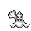
Stats
| Attack | 70 | |
|---|---|---|
| Defense | 80 | |
| Sp. Atk | 70 | |
| Sp. Def | 95 |
In the wild
| Wild level | 65–75 |
|---|---|
| HP | 90 |
| Experience | 12 |
| Egg groups | Water 1, Field |
Evolution
- Evolves from Seel at level 34.
Moves
| Level | Move | Type | Category | Power | Energy | Cooldown | Effect | |
|---|---|---|---|---|---|---|---|---|
| 1 | Tackle | Normal | Physical | 15 | 15 | 1s | Tackle is one of the most common and basic moves a Pokemon learns. It deals damage with no additional effects. | |
| 1 | 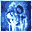 | Sheer Cold | Ice | Special | – | 100 | 30s | The foe is attacked with a blast of absolute-zero cold dealing damage equal to the opponent's 30% HP. It will fail if the target's level is higher than the user's level. Ice-type Pokemon era immune to Sheer Cold. |
| 1 | Headbutt | Normal | Physical | 70 | 70 | 11s | Headbutt deals damage and has a 30% chance of causing the target to flinch. | |
| 1 | Growl | Normal | Status | – | 60 | 60s | The user growls in a cute way, making the foe lower its ATTACK. stat. | |
| 1 | 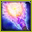 | Signal Beam | Bug | Special | 75 | 85 | 17s | Signal Beam deals damage and has a 10% chance of confusing the target. |
| 1 | Icy Wind | Ice | Special | 55 | 65 | 13s | Icy Wind deals damage and lowers the target's Speed by one stage. | |
| 7 | Water Sport | Water | Status | – | 60 | 60s | Water Sport increases user ATTACK and DEFENSE stats. | |
| 13 | Encore | Normal | Status | – | 100 | 60s | The user compels the target to keep using the move it encored for three turns. | |
| 17 | 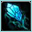 | Ice Shard | Ice | Physical | 10 | 40 | 9s | Ice Shard deals damage and has no secondary effect. |
| 21 | Rest | Psychic | Status | – | 100 | 180s | User sleeps for 5 seconds, but user is fully healed. | |
| 23 | 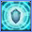 | Aqua Ring | Water | Status | – | 100 | 120s | The user surrounds itself with a veil of water, allowing it to restore 1/16 of its max HP at the end of every turn during 16 turns. |
| 27 | 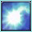 | Aurora Beam | Ice | Special | 65 | 70 | 16s | Aurora Beam deals damage and has a 10% chance of lowering the target's Attack by one stage. |
| 31 | Aqua Jet | Water | Physical | 40 | 40 | 6s | The user lunges at the target at a speed that makes it almost invisible. | |
| 33 | Brine | Water | Special | 65 | 80 | 15s | Brine inflicts damage, and its power doubles to 130 when the target is at or below 50% health. | |
| 39 | Take Down | Normal | Physical | 90 | 90 | 14s | Take Down deals damage and has no secondary effect. | |
| 45 | Dive | Water | Physical | 80 | 100 | 20s | Dive does damage and has no secondary effect. | |
| 49 | 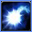 | Aqua Tail | Water | Physical | 90 | 90 | 14s | Aqua Tail deals damage and has no secondary effect. |
| 55 | 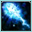 | Ice Beam | Ice | Special | 90 | 100 | 22s | Ice Beam inflicts damage and has a 10% chance of freezing the target. |
| 61 | Safeguard | Normal | Status | – | 100 | 90s | The user's party is protected from status conditions. | |
| 65 | 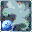 | Hail | Ice | Special | 30 | 100 | 20s | The user summons a hailstorm lasting five turns. It damages all Pokemon except the Ice type. |
Field abilities
StrengthWaterfallHeadbuttSurfDiveRock Smash
Special abilities
Thick FatHydration
Egg moves
BelchDisableEncoreEntrainmentFake OutHorn DrillIcicle SpearIron TailLickPerish SongSignal BeamSlamSleep TalkWater Pulse
Technical machines
AvalancheBideBlizzardBody SlamBubblebeamDouble EdgeDouble TeamHailHeadbuttHorn DrillHyper BeamIce BeamIcy WindMimicPay DayRageRain DanceRestSafeguardSkull BashSubstituteTake DownToxicWater GunWater Pulse
Drops
| Item | Amount | Chance | |
|---|---|---|---|
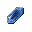 | flawless ice crystal | 1 | 35% |
| icicle | 1 | 28% | |
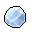 | ice cub | 1 | 23.3% |
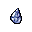 | frozen tear | 1 | 14% |
| giant ice cube | 1 | 11.7% | |
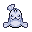 | dewgong doll | 1 | 0.1% |
| Icicle Plate | 1 | 0.025% | |
| Splash Plate | 1 | 0.025% | |
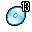 | TM 13 | 1 | 0.01% |
| TM 49 | 1 | 0.01% | |
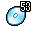 | TM 53 | 1 | 0.01% |
| held mystic water | 1 | 0.01% | |
| held never melt ice | 1 | 0.01% |